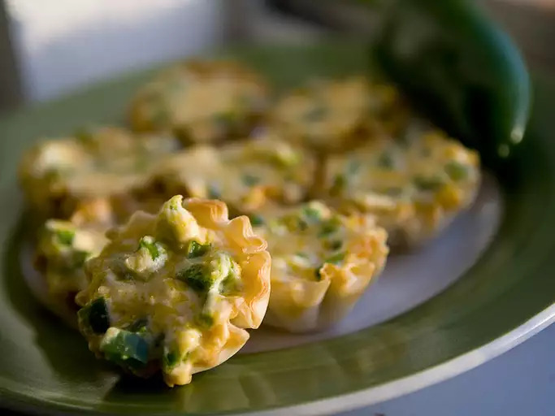

Popper Cups

Description
You'll want to eat them right away, but they will be molten hot so be careful!
Ingredients
- 12 mini phyllo tart shells
- 4 ounces cream cheese, softened
- 1/2 cup shredded Cheddar cheese
- 2 jalapeno peppers, seeded and chopped
- 1 tablespoon hot pepper sauce
- bacon bits
Steps
- Preheat an oven to 350 degrees F (175 degrees C). Place phyllo cups onto a baking sheet.
- Stir together cream cheese, Cheddar cheese, jalapenos, and hot sauce in a bowl. Spoon mixture into phyllo cups. Sprinkle bacon bits on top. Bake in preheated oven until golden brown, about 15 to 20 minutes. Serve warm.